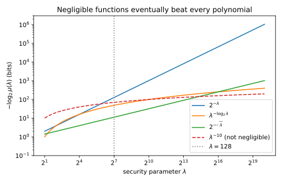
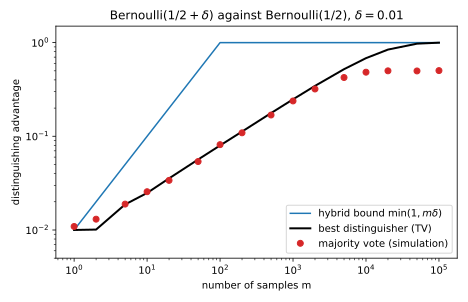
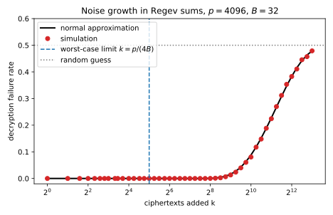

8 Cryptography basics
8.1 Why this matters
Some computations must hide something. An encrypted file hides a message. A value split among several holders must stay hidden from each holder on its own. To build or review such a system, you need a precise answer to one question. What does it mean that an observer learns nothing it was not supposed to learn?
Against unlimited computing power, almost nothing can be hidden. An attacker could try every possible key until one works. Cryptography therefore asks for less, namely that every attacker with realistic computing power learns almost nothing. This chapter makes “realistic” and “almost nothing” precise, and shows the few tools that prove such statements.
The whole subject rests on one idea, which is that security is a game. A challenger secretly flips a fair coin to pick one of two worlds. In one world the challenger might encrypt one message, and in the other world a different message. It shows the result to an adversary, who must guess which world it is in. An adversary who learns nothing from what it sees is right half the time, whatever it answers. So only a win rate above one half shows that something leaked. A scheme is secure when no efficient adversary beats the coin by more than a tiny amount. Proofs reach that conclusion in small steps, each of which changes one thing, and the rest of the chapter shows how.
8.2 Advantage
The simplest adversary sees one sample and answers with a single bit. It is called a distinguisher, and this chapter writes \(A\) for it. Read its answer 1 as “I think this sample came from the second world”. Let \(X\) be the distribution of the sample in the first world, and let \(Y\) be its distribution in the second. A distinguisher that is any good says 1 more often on samples from \(Y\) than on samples from \(X\). Its advantage is the gap between these two frequencies: \[\mathrm{Adv}_A(X, Y) = \big|\Pr[A(X) = 1] - \Pr[A(Y) = 1]\big|. \tag{8.1}\] Here \(\Pr[A(X) = 1]\) is the probability that the distinguisher says 1 when its sample comes from \(X\). A distinguisher that ignores its sample says 1 equally often in both worlds, so its advantage is 0. One that is always right has advantage 1.
The advantage and the chance of winning the coin game measure the same thing. The distinguisher wins when its guess matches the coin. Each world comes up half the time, so the chance of winning is the average of its success rates in the two worlds. Working this out gives a simple rule. A distinguisher with advantage \(\varepsilon\) wins with probability one half plus half of \(\varepsilon\). For an example, let the first world be a fair coin and the second a coin that lands heads with probability 0.6. A distinguisher that says 1 on heads says 1 with probability 0.6 in the second world and 0.5 in the first. Its advantage is therefore 0.1. It wins the game with probability 0.55, which is one half plus 0.05.
You already know distinguishers from machine learning. A classifier trained to tell real images from generated ones is a distinguisher. If it outputs 1 for “real”, it says 1 on real images at its true positive rate. It says 1 on generated images at its false positive rate. So its advantage is the true positive rate minus the false positive rate. Deciding which of two distributions produced a sample is a hypothesis test, the subject of Hypothesis testing.
How large can the advantage be? Some outcomes are more likely under one distribution than under the other. The best distinguisher says 1 exactly on the outcomes that are more likely under \(Y\). Its advantage is the extra probability that \(Y\) puts on those outcomes, compared with \(X\). That quantity is the total variation (TV) distance between the two distributions, which Divergences studies. A distinguisher can only react to the outcome it sees, so no strategy does better than this one, however long it runs. The TV distance is 0 when the two distributions are equal, and 1 when they never produce the same outcome.
This limit splits security into three levels. If the TV distance is 0, the two worlds look identical and no adversary has any advantage, which is perfect security. If the TV distance is tiny, even an adversary with unlimited time gains almost nothing, which is statistical security. The third level is the main business of cryptography. There, the TV distance can be large, as long as no efficient adversary can find the outcomes where the two worlds differ. This is computational security, and it is what lets a short key protect a long message.
8.3 Efficient adversaries and tiny advantages
No key resists every attacker. An attacker who tries keys one after another finds a 40-bit key quickly, and a 256-bit key never. Security is therefore a statement about how fast the attacker’s success shrinks as the key grows. Cryptographers measure the size of the key with a security parameter, written \(\lambda\). You can think of it as the key length in bits.
The asymptotic theory needs two definitions. The first says which attackers count. An attacker counts as efficient if its running time grows at most like a polynomial in \(\lambda\), such as the cube of \(\lambda\). Such an attacker is called probabilistic polynomial time (PPT), because it may also flip coins as it runs.
The second definition says which success probabilities count as tiny. A function of the key length is negligible if it eventually falls below one over every polynomial in \(\lambda\), and stays there. The function \(2^{-\lambda}\) is negligible, because \(2^\lambda\) outgrows every polynomial. The function \(\lambda^{-10}\) is not, because it never falls below \(\lambda^{-11}\). A scheme is secure if every PPT adversary has a negligible advantage.
The two definitions fit together for a reason. An efficient attacker can repeat its attack a polynomial number of times. The union bound from Concentration inequalities says that the chance that at least one of several events happens is at most the sum of their chances. So the chance that at least one try succeeds is at most the number of tries times the chance per try. A polynomial times a negligible function is still negligible, so repetition does not help. A tiny chance that was not negligible would not survive this. An attack that succeeds with probability \(\lambda^{-3}\) per try, repeated \(\lambda^4\) times, succeeds almost surely.
Brute force shows why the best one can ask for is “negligible”, never zero. Suppose an attacker tries \(t\) different keys against a key drawn uniformly from all \(2^\lambda\) keys. Each try is right with probability \(2^{-\lambda}\), so the attacker succeeds with probability \(t/2^\lambda\). That chance is negligible when \(t\) is a polynomial in \(\lambda\), but it is never zero.
The weakness of these definitions is that “negligible” describes a limit, not a value at the key length you actually use. Table 8.1 evaluates four functions at \(\lambda = 128\). The negligible \(2^{-\sqrt\lambda}\) is still \(3.9\times10^{-4}\) there. The non-negligible \(\lambda^{-10}\) is far smaller. The negligible function drops below the other one for good only from \(\lambda = 20{,}520\) (Figure 8.1). A statement that holds “for all large enough \(\lambda\)” does not tell you whether 128 is large enough.
| Function | Negligible? | Value at \(\lambda = 128\) |
|---|---|---|
| \(2^{-\lambda}\) | yes | \(2.9\times10^{-39}\) |
| \(\lambda^{-\log_2\lambda}\) | yes | \(1.8\times10^{-15}\) |
| \(2^{-\sqrt\lambda}\) | yes | \(3.9\times10^{-4}\) |
| \(\lambda^{-10}\) | no | \(8.5\times10^{-22}\) |

Real systems fix the key length. The block cipher AES, for example, uses 128-bit keys. Concrete security therefore replaces “efficient” and “negligible” by explicit numbers. It names the attacker’s resources, such as its running time and the number of questions it may ask, and bounds the advantage they can buy. Brute force sets the benchmark, so a scheme has \(\kappa\)-bit security if no attack does better than brute force over \(2^\kappa\) keys, where \(\kappa\) is a number of bits. In other words, an attacker that runs for time \(t\) gets an advantage of at most about \(t/2^\kappa\).
Here is what 128-bit security buys. Suppose an attacker tests \(10^{18}\) keys per second for a whole year. That is about \(2^{84.7}\) keys. Against a 128-bit key, the attack succeeds with probability \(9.3\times10^{-14}\). Trying all \(2^{128}\) keys would take \(1.08\times10^{13}\) years.
Security proofs are reductions. They show that an adversary who breaks a scheme can be turned into one that breaks a simpler primitive the scheme is built from. Read in reverse, if the primitive is hard to break, so is the scheme. The conversion usually loses something. Suppose a reduction turns an advantage against the scheme into one \(2^{20}\) times smaller against the primitive. If the primitive has 128-bit security, the scheme then has only about 108 bits. A tight reduction loses almost nothing. A loose one forces larger keys for the same guarantee.
8.4 Hybrid arguments
Proofs rarely compare the real world and the ideal world directly. They walk from one to the other through intermediate worlds called hybrids, and each world differs from the next in one thing. Write \(H_0\) for the first world and \(H_m\) for the last, where \(m\) is the number of steps. Look at how often a distinguisher says 1 in each world. The gap between the two ends is the sum of the gaps between neighbours, since every intermediate frequency is added once and subtracted once. The size of a sum is at most the sum of the sizes, so the advantages add up: \[\mathrm{Adv}_A(H_0, H_m) \le \sum_{i=1}^m\mathrm{Adv}_A(H_{i-1}, H_i). \tag{8.2}\] Any gap between the two ends must show up in at least one step of the chain.
The most common use is for many samples. Suppose that one sample from \(X\) cannot be told from one sample from \(Y\). To compare \(m\) independent samples from each, walk from all samples drawn from \(X\) to all drawn from \(Y\), swapping one sample at a time. Each step changes a single sample, so it is a one-sample problem. The total advantage is therefore at most \(m\) times the one-sample advantage.
The argument needs two conditions. First, the number of samples \(m\) must be a polynomial in \(\lambda\). Otherwise \(m\) times a negligible advantage need not be negligible, and the bound says nothing. Second, both distributions must be efficiently samplable. The proof turns an attack on \(m\) samples into an attack on one sample, which fills in the other positions by drawing samples itself. If drawing samples were slow, that attack would no longer be efficient.
The factor \(m\) is safe but pessimistic. It reflects how the proof is organized, not how the best attacker works. Take a coin that lands heads with probability 0.51, and compare \(m\) of its flips with \(m\) fair flips. Write \(\delta\) for the bias, here 0.01. One flip gives an advantage of at most \(\delta\), so the hybrid bound for \(m\) flips is \(m\delta\). Table 8.2 compares it with the best possible advantage and with a simple test, majority vote, which says 1 if more than half the flips are heads.
| Flips \(m\) | Majority vote (simulation) | Best possible (TV) | Hybrid bound \(\min(1, m\delta)\) |
|---|---|---|---|
| 1 | 0.008 | 0.010 | 0.010 |
| 100 | 0.082 | 0.080 | 1.000 |
| 10,000 | 0.481 | 0.683 | 1.000 |
The hybrid bound is exact for one flip and useless by 100 flips. The best attacker counts the heads. The two counts differ on average by \(m\delta\), but each count also fluctuates randomly by about \(\sqrt m/2\). So the best advantage grows like \(\delta\sqrt m\), not like \(\delta m\) (Figure 8.2). To reach a constant advantage, such as one half, the attacker needs about \(1/\delta^2\) flips, while the hybrid bound would allow it after \(1/\delta\).

Majority vote stalls near 0.48, far below the best possible 0.683. Its threshold of half the flips sits at the centre of the fair coin’s count. However large \(m\) is, the fair count lands above that threshold half the time. The best test puts its threshold halfway between the two average counts instead. A reasonable-looking test can thus be far from the best one, which is why security is measured against every adversary.
8.5 Pseudorandom generators and functions
Truly random bits are expensive to produce and to share, while a short random key is cheap. Two tools stretch a short key into a lot of randomness that looks real to any efficient observer.
A pseudorandom generator (PRG) is a fast, deterministic procedure that stretches a short random seed into a longer string. It is secure if no efficient distinguisher can tell its output from truly random bits of the same length. A PRG can never be statistically secure. Its outputs form a tiny subset of all strings of that length, since there are far fewer seeds than strings. A distinguisher that checks whether a string is in that subset wins with an advantage of at least one half. But checking means trying every seed, which takes exponential time. Pseudorandomness is therefore only a promise against efficient distinguishers. PRGs exist if one-way functions exist, and stream ciphers such as ChaCha20 are modelled as PRGs.
A random function is a table that gives each input its own independent, uniform output. A table on 128-bit inputs has \(2^{128}\) entries, so nobody can store one.
A pseudorandom function (PRF) gives the same appearance from a short key. It is a keyed function, written \(F_k\) for the key \(k\). It is secure if no efficient adversary can tell it from a truly random function, even when the adversary chooses its own inputs. The game hides one of the two functions in a box, chosen by a fair coin. The adversary may ask the box for its output on any inputs it likes, each one chosen after seeing the earlier answers. The hash-based message authentication code (HMAC) is modelled as a PRF in practice.
A PRF can be built from any PRG whose output is twice as long as its seed, by a construction called the GGM tree. It grows a binary tree of keys, with the secret key at the root. The PRG applied to a node gives two halves, which become its two children. Each bit of the input picks the left or the right child, and the leaf reached at the end is the output. The proof replaces the tree by random values, one level at a time, as a chain of hybrids. Write \(n\) for the number of input bits and \(q\) for the number of queries the adversary makes. The PRF’s advantage is then at most \(nq\) times the PRG’s advantage. The full edition sketches this proof and cites the complete one.
In proofs, both tools play the same role. They let you replace “pseudorandom” by “truly random”, at the cost of a small advantage.
8.6 The birthday bound
Many arguments about random values fail only if two of the values happen to coincide. The birthday bound says how likely that is. Draw \(q\) values independently and uniformly from a set of size \(N\). These values form about \(q^2/2\) pairs. Each pair coincides with probability \(1/N\), because whatever the first value is, the second matches it with probability \(1/N\). So collisions become likely once \(q^2/2\) approaches \(N\). That happens after about \(\sqrt N\) draws, far fewer than \(N\). Precisely, \[1 - e^{-q(q-1)/(2N)} \le \Pr[\text{collision}] \le \frac{q(q-1)}{2N}. \tag{8.3}\] The upper bound is the union bound over all pairs. The lower bound comes from the exact chance of no collision, which multiplies the chances that each new value misses all earlier ones. The two bounds are close. While the upper bound is below 1, it overstates the true chance by a factor of at most about 1.6. A collision becomes as likely as not at about \(1.18\sqrt N\) draws.
The bound needs the values to be uniform and independent. That is what makes each pair coincide with probability \(1/N\). Values that are not uniform can coincide more often than that, and then the bound no longer applies.
| Case | \(q\) | \(N\) | Exact | Union bound | \(1 - e^{-q(q-1)/(2N)}\) |
|---|---|---|---|---|---|
| Shared birthday in a class | 23 | 365 | 0.507 | 0.693 | 0.500 |
| Hashing trick: 1,000 features into \(2^{20}\) buckets | 1,000 | \(2^{20}\) | 0.379 | 0.476 | 0.379 |
| Random 32-bit identifiers for 100,000 records | 100,000 | \(2^{32}\) | 0.688 | 1.164 | 0.688 |
Table 8.3 shows how early collisions come. With the hashing trick, 1,000 features hashed into about a million buckets already collide with probability 0.379. Random 32-bit identifiers for 100,000 records clash more often than not. There, the union bound is above 1 and says nothing, while the lower bound is accurate. Figure 8.3 checks the bounds against simulation for \(N = 2^{16}\). In general, random values of \(\kappa\) bits start to collide after about \(2^{\kappa/2}\) draws.

The same counting limits how much data one key may protect. A block cipher such as AES is a keyed permutation, which never maps two different inputs to the same output. It is modelled as a pseudorandom permutation (PRP), a keyed function that no efficient adversary can tell from a random shuffle of the inputs. Most proofs, however, want a PRF.
The only visible difference between a random function and a random permutation is that the function sometimes repeats an output and the permutation never does. So an adversary can tell them apart only about as often as its answers collide. This is the switching lemma. Write \(n\) for the number of bits in a block, so that there are \(2^n\) possible blocks. After \(q\) queries, the lemma bounds the extra advantage by \(q^2/2^{n+1}\), which is the birthday bound for \(2^n\) values. The bound is tight. An adversary that says 1 when it sees a repeated answer has an advantage equal to the exact chance of a collision.
So a bound in terms of queries is really a limit on data. Take blocks of 128 bits. Then \(2^{32}\) blocks hold 64 GiB of data, and they cost an extra advantage of at most \(2^{-65}\). At \(2^{48}\) blocks the bound has grown to \(2^{-33}\). At \(2^{64}\) blocks it reaches one half and says nothing. The guarantee degrades with the square of the data under one key, which is why you should change keys long before that point. Ciphers with 64-bit blocks fare much worse. To keep the extra advantage below \(2^{-20}\), they can process only about 6 million blocks under one key.
8.7 Encryption
An encryption scheme has perfect secrecy if the ciphertext’s distribution is the same for every message. Seeing the ciphertext then does not change how likely any message is. The one-time pad achieves this. Its key \(K\) is a uniformly random string as long as the message \(m\). The ciphertext is \(m \oplus K\), where \(\oplus\) is the bitwise exclusive or (XOR), which flips each bit of the message where the key has a 1. For a fixed message, each key gives a different ciphertext, and each ciphertext comes from exactly one key. A uniform key therefore gives a uniform ciphertext, whatever the message is. Table 8.4 shows this for 2-bit messages.
| Key \(K\) | 00 | 01 | 10 | 11 |
|---|---|---|---|---|
| Ciphertext for \(m = 01\) | 01 | 00 | 11 | 10 |
| Ciphertext for \(m = 10\) | 10 | 11 | 00 | 01 |
Perfect secrecy has a price, because it needs at least as many keys as messages. Fix a ciphertext. Each key decrypts it to one message, so it can come from at most as many messages as there are keys. With fewer keys than messages, some message could never produce that ciphertext, and seeing it would rule that message out. The pad must also be used only once. Combining two ciphertexts under the same pad with XOR cancels the pad and reveals the XOR of the two messages.
Practical schemes use short keys, so they settle for computational security. The standard goal is security under chosen-plaintext attack (CPA), defined by a game. The adversary may ask for encryptions of any messages it likes, at any time. It then submits two messages of equal length and receives the encryption of one of them, chosen by a fair coin. It must guess which one it got. The equal length is required because a ciphertext usually reveals the length of its message. The encryption requests model reality, since an attacker can often get chosen data encrypted, such as a request it sends or a value it plants in a database. Passing this game is equivalent to a scheme hiding everything an efficient adversary could compute about the message, apart from its length.
The game has a consequence that surprises many programmers, which is that encryption must be randomized. Suppose encrypting the same message always gives the same ciphertext. The adversary asks for the encryption of its first message, then compares it with the challenge. If they match, it got the first message, and otherwise the second. It is always right, so its advantage is 1. The full edition’s script runs this attack and measures an advantage of 1.000. The same weakness shows up without any game. Deterministic encryption of a column of labels maps equal labels to equal ciphertexts. The frequency of each ciphertext then reveals the frequency of each label.
The fix is to use a fresh pad for every encryption. Draw a fresh random value \(r\), called a nonce, from a set \(\mathcal R\) of possible values. Use \(F_k(r)\), the PRF’s output on \(r\), as a one-time pad, and send \(r\) along so that the receiver can rebuild the pad. The ciphertext is the pair \((r, m \oplus F_k(r))\). This scheme can fail in only two ways. Either the PRF can be told from a random function, or the challenge reuses a nonce that the adversary has already seen, so its pad is known. The bound adds the two. After \(q\) encryptions, the advantage is at most twice the PRF’s advantage plus \(q/\lvert\mathcal R\rvert\), where \(\lvert\mathcal R\rvert\) is the number of possible nonces.
The second term is real, not a weakness of the proof. Take 8-bit nonces and 16 encryptions. An attacker who waits for a repeated nonce then wins with advantage 0.0607. The simulation measures 0.0605, and the bound is 0.0625. With 128-bit nonces, the same attack has an advantage below \(2^{-124}\). The argument needs every nonce to be fresh. So the set of nonces must be large enough that a repeat is unlikely, and the birthday bound tells you how large.
8.8 Simulation and secret sharing
Encryption hides everything. Many procedures must instead reveal something, such as a final result, and nothing else. “Nothing else” is hard to state directly, because a participant may combine what it sees in clever ways. Simulation sidesteps the problem. Suppose the participant could have faked everything it sees from what it is allowed to learn. Then what it sees contains nothing more.
Here is the definition in symbols. A participant’s view is everything it sees during a run, which depends on all the inputs \(x\) and on the procedure’s randomness. Write \(L(x)\) for what it is allowed to learn, such as its own input and the output. A simulator is an efficient procedure that receives only \(L(x)\) and produces a fake view. The procedure reveals nothing beyond \(L(x)\) if the fake view has the same distribution as the real one, for every input \(x\): \[S(L(x)) \equiv \mathrm{View}(x). \tag{8.4}\] Here \(S\) is the simulator and \(\mathrm{View}(x)\) is the real view. Replacing “the same distribution” by “statistically” or “computationally indistinguishable” gives the weaker kinds of security.
The definition captures “nothing else” for a simple reason. Anything the participant could compute from its real view, it could compute equally well from the simulator’s output. That output was made from \(L(x)\) alone, so whatever the view reveals, \(L(x)\) already revealed. The simulator must be efficient. An unbounded simulator could compute things the participant cannot, and the definition would then accept views that leak facts that are hard to compute from \(L(x)\). Simulation also says nothing about whether revealing \(L(x)\) itself is acceptable. That is decided when you choose \(L\).
Additive secret sharing is the simplest example. It works with the integers from 0 to \(p - 1\), where \(p\) is the modulus and arithmetic wraps around mod \(p\). To split a secret \(x\) among \(h\) holders, draw \(h - 1\) shares uniformly at random. Set the last share to \(x\) minus the sum of the others, mod \(p\). All the shares add up to \(x\). Shares of two secrets also add up to shares of their sum.
Any \(h - 1\) of the shares look like independent uniform numbers, whatever the secret is. The one missing share is what ties them to \(x\). The reason is that subtracting a uniform number mod \(p\) wraps around and hits every value equally often. Table 8.5 shows this for two holders and \(p = 5\). As the random first share \(r\) runs through all five values, the second share \(x - r\) takes each value exactly once, for either secret. The simulator for a group of \(h - 1\) holders therefore just outputs uniform random numbers. The fake view has exactly the real distribution, so the security is perfect.
If the group also learns the secret, for example because it is published later, the simulator receives \(x\). It draws \(h - 1\) uniform shares and sets the last one to \(x\) minus their sum. This matches the real shares exactly. It is the typical form of a simulator. It is random where the view is random, and consistent with the leakage where the leakage pins the view down.
The wrap-around is a condition of the result, not a detail. Without it, the share’s range moves with the secret. Suppose the mask \(r\) is uniform on the 16 values from 0 to 15, and the share \(x - r\) is not reduced. The share then lies in a window of 16 values that ends at the secret itself. The window for the secret 7 starts seven places above the window for the secret 0. Values that are possible under one secret are impossible under the other, and the TV distance between the two cases is \(7/16 = 0.4375\). A simulation with 100,000 shares each measures 0.4423 (Figure 8.4). With shares reduced modulo 11, the same simulation measures 0.0045. That is sampling noise, since the exact distance is zero. In general, the TV distance is the difference between the two secrets divided by the mask range \(R\). A much wider mask makes it tiny, which gives statistical rather than perfect security.

8.9 Learning with errors
Every tool so far is generic, built from any primitive with the right property. Learning with errors (LWE) is a specific hard problem with three attractions. It is as hard as worst-case problems on lattices. No efficient quantum attack on it is known. And encryption built on it lets you add ciphertexts without decrypting them.
LWE hides a secret vector behind linear equations whose right-hand sides are slightly wrong. The secret \(s\) is a vector of numbers mod \(p\). Its length \(d\) is called the dimension. Each sample is a random vector \(a\) together with a number \(b\). To compute that number, take the inner product \(\langle a, s\rangle\), the sum of the products of matching entries. Then add the error \(e\), a small random integer drawn fresh for each sample, and reduce mod \(p\). The search version of the problem asks for \(s\). The decision version asks whether a list of pairs consists of LWE samples or of uniform random pairs.
The errors are what make the problem hard. Without them, the samples form a linear system, and Gaussian elimination solves it from \(d\) independent equations. With them, elimination solves the wrong system exactly. Undoing the equations multiplies the small errors by large numbers mod \(p\), which scrambles the answer. The full edition’s script shows this with a 16-dimensional secret and \(p = 4096\). Without errors, elimination recovers all 16 coordinates. With errors of \(-1\), 0 or 1, it recovers none of them.
Hardness holds under a condition on the errors. Regev proved it for errors drawn from a normal distribution rounded to integers, with a standard deviation large enough relative to \(\sqrt d\). Under that condition, solving LWE is at least as hard as worst-case lattice problems, first with a quantum reduction and later with classical ones. Other small error distributions, such as the uniform errors in the toy below, need separate arguments. The full edition cites these results rather than proving them.
Regev encryption of a single bit uses LWE directly. Picture the numbers mod \(p\) as a clock with \(p\) positions, where \(p\) is even. To encrypt a bit \(m\), take a fresh LWE sample and move its \(b\) halfway round the clock if the bit is 1. Whoever knows \(s\) subtracts \(\langle a, s\rangle\). What remains is the error plus the encoded bit, which is near 0 for the bit 0 and near halfway for the bit 1. Decryption reads off whichever is closer. It is correct as long as the error is smaller than a quarter of the clock, \(\lvert e\rvert < p/4\). A larger error could push the value past the boundary between the two halves.
Without the key, the sample looks uniform, by the decision version of LWE. The bit is then added to something that looks uniform, which works like a one-time pad. That is why the scheme is secure against chosen-plaintext attack, provided that decision LWE is hard.
Adding two ciphertexts entry by entry adds everything inside them. The bits add, and two half-turns round the clock make a full turn. So the sum decrypts to the XOR of the bits. Two half-turns make exactly a full turn only when \(p\) is even, which is why the scheme needs an even \(p\). The errors add as well. Suppose every error lies between \(-B\) and \(B\), where \(B\) is the error bound. The sum of \(k\) ciphertexts then has an error of at most \(kB\), and it decrypts correctly whenever \[k < \frac{p}{4B}. \tag{8.5}\] Take \(p = 4096\) and \(B = 32\). The budget then guarantees correct decryption for fewer than 32 additions.
That guarantee is a worst case. It assumes every error is as large as possible and all have the same sign. Independent errors with mean zero mostly cancel instead. Their variances add, so the summed error has a standard deviation that grows like \(\sqrt k\), not like \(k\). Table 8.6 compares a simulation with a normal approximation built on this fact.
| Ciphertexts added \(k\) | Empirical failure rate | Normal approximation |
|---|---|---|
| 1 | 0.0000 | 0.0000 |
| 31 | 0.0000 | 0.0000 |
| 256 | 0.0007 | 0.0006 |
| 1,024 | 0.0868 | 0.0881 |
| 4,096 | 0.3814 | 0.3833 |
Take 1,024 additions as an example. The summed error then has a standard deviation of about 600. A quarter of the clock is 1,024, about 1.7 standard deviations. A normal value lands that far from zero with probability about 0.088. Failures become measurable only around 256 additions, eight times the guaranteed 32 (Figure 8.5). But the budget is still finite. Once the error is comparable to a quarter of the clock, the decrypted value is spread round the whole clock, and decryption becomes a coin flip. A larger modulus, relative to the error, buys more additions. That trade-off sets the parameters of every LWE-based scheme that computes on ciphertexts.

A Regev ciphertext carries one bit in \(d + 1\) numbers, which is wasteful. Ring-LWE packs much more into the same space. It replaces vectors by polynomials and the inner product by polynomial multiplication. One ring sample then stands for many related LWE samples and carries many message values. Fast transforms compute it quickly. Its hardness rests on lattices with this extra structure. A middle ground called module-LWE underlies the standardized key-encapsulation mechanism ML-KEM, published as FIPS 203 in 2024.
8.10 Code
The birthday bound needs one product. Each new value must miss all the earlier ones, and the code multiplies those chances:
from math import exp, prod
def collision_probability(q: int, n: int) -> float:
"""Exact probability that q uniform draws from n values contain a repeat."""
return 1 - prod(1 - i / n for i in range(q))
def union_bound(q: int, n: int) -> float:
return q * (q - 1) / (2 * n)
def lower_bound(q: int, n: int) -> float:
return 1 - exp(-union_bound(q, n))
print(f"{collision_probability(23, 365):.3f} {union_bound(23, 365):.3f}") # 0.507 0.693
print(f"{collision_probability(1_000, 2**20):.3f} {lower_bound(1_000, 2**20):.3f}") # 0.379 0.379
print(f"{collision_probability(100_000, 2**32):.3f} {union_bound(100_000, 2**32):.3f}") # 0.688 1.164The three lines print the three rows of Table 8.3.
The full edition’s script, crypto_basics.py, computes every number in this chapter. Its schemes are toys. Their parameters are far too small, nothing runs in constant time, and its random numbers are not cryptographically secure. Never use it to protect anything.
uv run python code/part01-prerequisites/crypto_basics.py8.11 Cheat sheet
| Result | Statement |
|---|---|
| Advantage | \(\lvert\Pr[A(X) = 1] - \Pr[A(Y) = 1]\rvert\), and \(\Pr[\text{win}] = \frac12 + \frac12\mathrm{Adv}\) |
| Best possible distinguisher | Advantage equal to the TV distance, whatever its running time |
| Negligible | Eventually below one over every polynomial in \(\lambda\); survives polynomially many repetitions |
| \(\kappa\)-bit security | Time \(t\) buys an advantage of at most about \(t/2^\kappa\) |
| Hybrid argument | Advantages add along a chain; \(m\) samples cost at most a factor \(m\) |
| Birthday bound | \(1 - e^{-q(q-1)/(2N)} \le \Pr[\text{collision}] \le q(q-1)/(2N)\); 50% at \(q \approx 1.18\sqrt N\) |
| PRP to PRF switching | Extra advantage at most \(q^2/2^{n+1}\) for \(n\)-bit blocks, and tight |
| GGM tree | PRF advantage at most \(nq\) times the PRG advantage |
| One-time pad | Perfect secrecy; needs as many keys as messages; never reuse the pad |
| CPA security | Deterministic schemes have advantage 1; \((r, m \oplus F_k(r))\) has advantage at most \(2\,\mathrm{Adv}_{\mathrm{PRF}} + q/\lvert\mathcal R\rvert\) |
| Simulation | Secure if a simulator fakes the view from the allowed leakage \(L(x)\) |
| Additive sharing mod \(p\) | Any \(h - 1\) shares are uniform: perfect security |
| Regev encryption | Correct if \(\lvert e\rvert < p/4\); sums of \(k\) ciphertexts correct if \(kB < p/4\); typical error grows like \(\sqrt k\) |
Rules of thumb
- Security of \(\kappa\) bits means an attacker with time \(t\) succeeds with probability about \(t/2^\kappa\).
- Random values of \(\kappa\) bits collide after about \(2^{\kappa/2}\) draws. Size identifiers, nonces and key lifetimes accordingly.
- Encryption that hides whether two messages are equal must be randomized.
- In LWE schemes, the error is a budget that each operation spends.
8.12 Further reading
- Katz & Lindell, Introduction to Modern Cryptography (3rd ed., 2020), ch. 2–3: perfect secrecy, pseudorandomness and CPA security, with complete proofs.
- Boneh & Shoup, A Graduate Course in Applied Cryptography, ch. 2–5: the same material in the concrete-security style, including the switching lemma.
- Lindell, “How to Simulate It — A Tutorial on the Simulation Proof Technique” (2017): the simulation paradigm step by step.
- Peikert, “A Decade of Lattice Cryptography” (2016): LWE, its variants and their parameters.
Derivations. Every result in this chapter is derived step by step in the full edition’s chapter, except the existence of PRGs and the hardness of LWE, which it cites, and the GGM tree, whose proof it sketches.